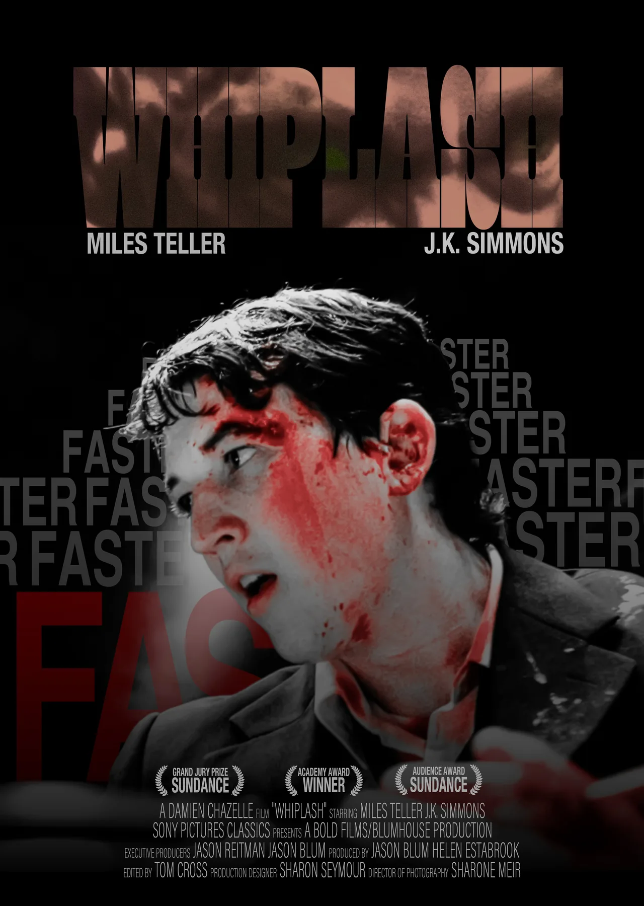

何を考えてつくったか
大学の情報デザインの講義で、デジタルグラフィックと紙媒体の課題に取り組んでいます。掲載したポスターでは、最初に見てほしい要素を決め、情報の大きさと位置を変えながら視線の順番を考えました。
細部を整える
文字を選んで置くだけでなく、字間や行間を調整し、画像と文字がぶつからない余白を探ります。別のポスター課題でも、写真の強さに対してタイトルと情報をどう配置するかを試しました。
画面の外まで考える
印刷物では、画面上の色や寸法がそのまま完成形にはなりません。塗り足し、CMYK、断裁、背表紙の厚みなど、実物になるときの条件を確認しながらデータをつくっています。
制作の記録
